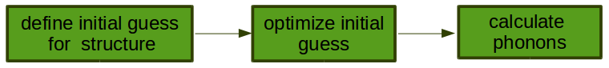
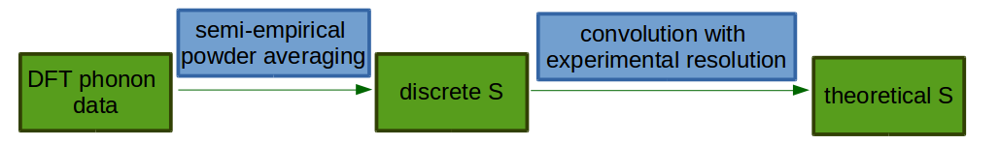

Ab initio calculation of dynamical structure factor (S)#
Introduction#
The purpose of this document is to explain the link between theoretical and experimental \(S(\mathbf{Q}, \omega)\) and to describe in general how the theoretical \(S\) is calculated from from ab initio data by plugins in Mantid.
During an inelastic neutron scattering experiment, a sample is exposed to neutron flux and a response is recorded in the form of dynamical structure factor, \(S(\mathbf{Q}, \omega)\). In principle, one obtains a vibrational spectrum that can be quite difficult to analyse; in crystalline materials this is related to the wavevector-dependent phonon spectrum. In order to better understand experimental outputs, one can compare with results from modelling. Ab initio calculations, especially within density-functional theory (DFT) [1], have proven quite successful in predicting vibrational spectra.

The usual workfow for calculating phonon spectra within DFT is presented in the figure above. First, one defines an initial guess for the structure of interest. The initial guess should be as close as possible to an experimental structure, and is usually derived from elastic X-ray and/or neutron scattering measurements. Then the structure parameters are locally optimised within DFT, finding the nearest structure that minimises the DFT energy. At this point, there should be no net force on the atoms.
For this “relaxed” structure the dynamical matrix is calculated at a set of phonon wavevectors \(\mathbf{k}\), and converted to a set of physical frequencies and displacements that contribute to the dynamics of the material. The dynamical matrix is related by a Fourier transform (at the given \(\mathbf{k}\)-points) to the Hessian of the system – the second derivative of the system Hamiltonian with respect to atomic displacements. While it is possible to calculate the dynamical matrix at arbitrary \(\mathbf{k}\)-points by perturbation theory, it is typical to compute these on a regular grid or, equivalently, compute the Hessian up to some real-space supercell of the crystal structure. This model allows an inexpensive “Fourier interpolation” of frequencies and displacements at arbitrary \(\mathbf{k}\)-points, as long as the supercell size is sufficient to contain the relevant atomic interactions.
Solution of the dynamical matrix vibrational at each sampled wavevector \(\mathbf{k}\) produces a set of modes, which are related to the fundamental vibrational excitations of the system. \(\mathbf{k}\) corresponds to a neutron momentum transfer \(\mathbf{Q}\), with eigenvalues related to the energy transfer \(\omega\) and eigenvectors related to atomic displacements. By inserting this second-order model into the response-function theory of neutron scattering we can calculate \(S(\mathbf{Q}, \omega)\) within the harmonic approximation.
Some further simplifications are made in order to account for powder-averaging and higher-order excitations at reasonable computational cost: the method current implemented in Abins is a
DOS-like
almost-isotropic
incoherent approximation
with simplified high-order terms.
The incoherent approximation allows each atom to be calculated separately, then the total spectrum is obtained as a sum over all atomic contributions.
This method is well-established for molecular spectroscopy; studies of inorganic crystals, on the other hand, tend to calculate the coherent scattering and neglect multi-phonon terms.
Working equations#

The vibrational part of the structure factor \(S(\mathbf{Q}, \omega)\) is related by a Fourier transform to the intermediate scattering function \(F(\mathbf{Q}, t) = \frac{1}{N} \sum_{i,i^\prime} \left< \exp[i \mathbf{Q} (\mathbf{r}_i(t) - \mathbf{r}_i^\prime(0))] \right>\). This is a double-sum over atom pairs \(i, i^\prime\) in a thermally-averaged correlation function.
Solving this for a quantum harmonic oscillator, making the incoherent approximation and a Taylor expansion of the exponential term allows the double-sum over atoms to be separated into a sum over atoms \(i\), vibrational mode indices \(\nu\) and quantum orders \(n\). These intensities may be computed independently:
\(S_i(\mathbf{Q}, n\omega_{\nu}) = \sigma_i \frac{[\mathbf{Q Q : B}_{\nu,i} \left<n + 1\right>]^{n}}{n!} \exp(-\mathbf{Q Q : A}_i)\)
in which \(\sigma_i\) is an atomic cross-section while \(\mathbf{B_{\nu,i}}\) and \(\mathbf{A}_i\) are \(3 \times 3\) quadratic dispacement tensors of individual phonon modes and the overall atomic dispacements, respectively. In Einstein notation the contraction of two 2–D tensors \(\mathbf{A}:\mathbf{B}\) is \(\mathbf{A}_{ij}\mathbf{B}_{ij}\).
Similar expressions are formed for combination modes in which \(n\omega\) becomes \(\sum^n \omega_\nu\) and \(\mathbf{B}_{\nu,i}^{n}\) is replaced by \(\prod_\nu^n \mathbf{B}_{\nu,i}\).
The displacement tensors can be obtained from the calculated phonon eigenvectors \({\mathbf{c}}\): \(\mathbf{B_{\nu_i}}\) is mode-dependent and thermally-occupied in the expression above by \(\left<n+1\right>\) Bose statistics while \(\mathbf{A}_i\) is a property of each atom site and includes occupation \(\left<2n+1\right>\): at low temperature both terms reduce to 1.
\(\mathbf{B}_{\nu,i} = \mathbf{c}_{\nu,i} \mathbf{c}_{\nu,i}^\intercal \frac{\hbar}{2 M_i \omega_\nu}\)
\(A_i = \sum_i \mathbf{B}_{\omega,i} \left<2n + 1\right>\)
where \(\mathbf{c}_{i, \nu}\) – normalised eigenvector for atom \(i\) in mode \(\nu\) and \(M_i\) is the mass of atom \(i\). For the rest of this document, we define \(\mathbf{B}\) to include the Bose factor \(\left<n+1\right>\).
In DFT studies of solid materials, the simulation region is generally a finite unit cell with periodic boundary conditions. This models an infinite perfect crystal; in order to compare such calculations with powder experiments, orientational averaging should be considered. In Abins, the “almost-isotropic approximation” is applied to the spherical integration over reciprocal space, replacing the vector \(\mathbf{Q}\) with a scalar \(Q\) [2], [3]:
\(S_i (Q,\omega_\nu) = \sigma_i \frac{Q^2 \mathrm{Tr}\mathbf{B}_{\nu,i}}{3} \exp\left(-Q^2 \alpha_{\nu,i} \right)\)
where
\(\alpha_{\nu,i} = \frac{1}{5} \left \lbrace \mathrm{Tr} \mathbf{A}_i + \frac{2 \mathbf{B}^{\omega_\nu,i}: \mathbf{A}_i}{\mathrm{Tr} \mathbf{B}^{\omega_\nu,i}} \right\rbrace\)
Where \(\mathrm{Tr}\) denotes the “trace”. In this case, \(\mathbf{A}:\mathbf{B}\) becomes equivalent to \(\mathrm{Tr}(\mathbf{A}\cdot\mathbf{B})\) due to the symmetry of the quadratic displacement tensors.
Note that the exponential term is no longer a “pure” Debye–Waller factor, as some mode-dependence is introduced by the powder-averaging. We have also conflated the phonon mode indices and their original wavevector \(\mathbf{k}\) into a single index \(\nu\); this is a “DOS-like approximation” in which we assume that the reciprocal lattice spacing is small relative to the observed \(Q\), and so spherical averaging will approximate an even sampling of the Brillouin zone.
The formula above covers the first-order quantum events – the transitions \(0 \rightarrow 1\) for each phonon. The \(1 \rightarrow 0\) events (i.e. energy to the scattered neutron) are currently neglected, as the contribution vanishes at low temperature. The powder-averaging derivations are more complex for higher-order quantum events. At second order some exponential terms are neglected, and isotropic Debye-Waller factor is used without any mode-dependence [4].
\(S_i^{n=2}(Q, \omega_\nu + \omega_{\nu^{\prime}}) = \frac{Q^4}{15 C}\left( \mathrm{Tr}\mathbf{B}_{i,\nu}\mathrm{Tr}\mathbf{B}_{i,\nu^\prime} + \mathbf{B}_{i,\nu}:\mathbf{B}_{i,\nu^\prime} + \mathbf{B}_{i,\nu^\prime}:\mathbf{B}_{i,\nu} \right) \exp\left(-Q^2 \mathbf{A}_i / 3 \right)\sigma_i\)
where \(C = \begin{cases} 2 & \textrm{if $\nu=\nu^\prime$} \\ 1 & \textrm{otherwise} \end{cases}\)
For higher-order events we can further simplify with a fully isotropic approximation \(\mathbf{Q Q}:\mathbf{B} \approx Q^2 \mathrm{Tr}\mathbf{B} / 3\):
\(S_i^n(Q, \omega_\nu + \omega_{\nu^{\prime}} + \cdots) = \frac{Q^{2n}}{n!} \left[\prod_\nu^n \frac{\mathrm{Tr}\mathbf{B}_{i,\nu}}{3} \right] \exp\left(-Q^2 \frac{\mathrm{Tr}\mathbf{A}_i}{3} \right) \sigma_i\)
While a significant simplification, this allows the “combinatorial explosion” of phonon-mode combinations to be avoided. The mode-by-mode terms are combined into an energy spectrum
\(S_i^n(Q, \omega) = \sum_{(\nu, \nu^\prime, \cdots)\in \mathrm{fundamentals}} S_i(Q, \omega_\nu + \omega_{\nu^\prime} + \cdots) \delta(\omega - [\omega_\nu + \omega_{\nu^\prime} + \cdots])\)
in which we identify a recursive term \(s_i\)
\(S_i^n(Q, \omega) = \frac{\sigma_i}{n!}s_i^n(Q, \omega) \exp\left(-Q^2 \mathbf{A}_i / 3 \right)\)
\(s_i^n(Q, \omega) = Q^{2n} \sum_{(\nu, \nu^\prime, \cdots)\in \mathrm{fundamentals}} \left[\prod_{\nu = \nu, \nu^\prime, \cdots} \frac{\mathrm{Tr}\mathbf{B}_{i,\nu}}{3} \right] \delta(\omega - [\omega_\nu + \omega_{\nu^\prime} + \cdots])\)
\(s_i^n(Q, \omega) = \sum_{\nu\in \mathrm{fundamentals}} \frac{Q^2\mathrm{Tr}\mathbf{B}_{i,\nu}}{3} \delta(\omega - \omega_\nu) * s_i^{n-1}(Q, \omega)\)
By performing the convolution (\(*\)) operations on a numerical grid it is possible to reach \(n=10\) without computing an infeasible \((3N_\mathrm{atoms} N_\mathbf{k})^{10}\) intensity values.
Resolution#
After evaluating the above equations one obtains the discrete \(S\) for each quantum order and for each atom: \(S_\mathrm{discrete}\). In order to compare these functions with an experimental spectrum one has to convolve them with experimental resolution \(f(\omega)\)
\(S_{i,\mathrm{theory}}^{n}(Q, \omega) = S_{i,\mathrm{discrete}}^{n}(Q, \omega) * f(\omega)\)
For TOSCA and TOSCA-like instruments \(f(\omega)\) is treated as a Gaussian function with energy-dependent width \(\sigma(\omega)\):
\(f(\omega)=\frac{\exp(-(\omega)^2 / \sigma(\omega))}{\sqrt{\sigma(\omega) \pi}}\)
The application of an energy-dependent resolution function is not trivial. For efficiency Abins uses an approximate scheme documented here.
Energy-Q relations#
Although we are nominally measuring the property \(S(\mathbf{Q}, \omega)\) or \(S(Q, \omega)\), in time-of-flight neutron spectrometers, \(\mathbf{Q}\) and \(\omega\) are not independent. Abins calculates 1-D \(S(\omega)\) spectra in which the corresponding value(s) of \(Q\) are implicitly determined by the instrument design and settings. Abins2D models multi-detector instruments that generate a more complete 2-D map but there are still kinematic constraints on the measurement region. The QE Coverage interface can be used to explore and plot these \(\omega\)–\(Q\) relations.
Current implementation#
Calculation of theoretical \(S\) from ab initio results is implemented in Abins and Abins. At the moment Abins supports phonon outputs from the ab initio codes CASTEP, CRYSTAL, Gaussian, DMOL3 and VASP, as well as force constants computed with Phonopy.
Due to the “DOS-like approximation” bands are assumed to be flat throughout the Brillouin zone. While only the incoherent scattering spectrum is calculated, coherent weights may be included to make an “incoherent approximation” to the full spectrum. The method implemented in Abins is primarily applicable for incoherent scattering in molecular crystals.
Instrument models are included for TOSCA, LAGRANGE and PANTHER using parameterised fits for the resolution function \(\sigma(\omega)\). Instruments MAPS, MARI and MERLIN use PyChop to obtain values for a polynomial fit.
Citing Abins#
If Abins is used as part of your data analysis routines, please cite the relevant reference [5].
References#
Category: Concepts